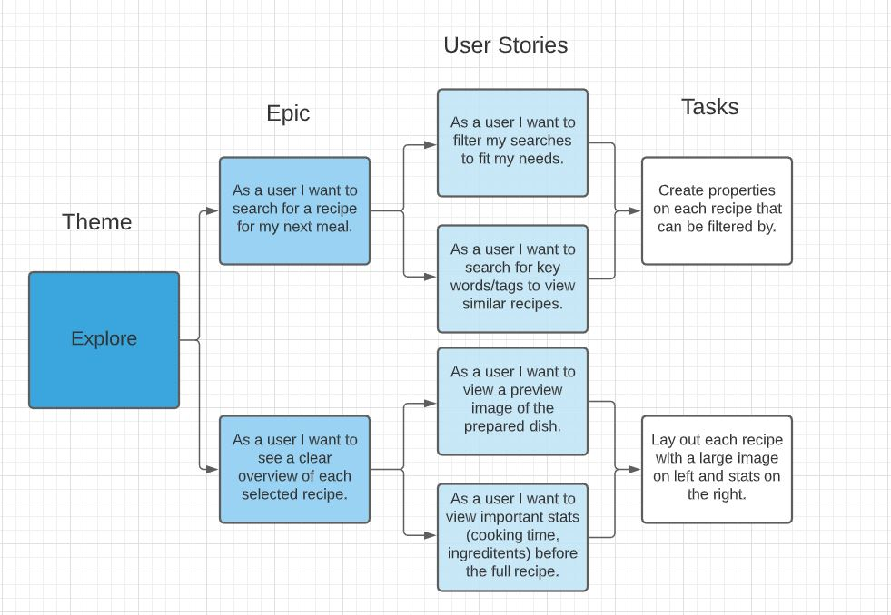
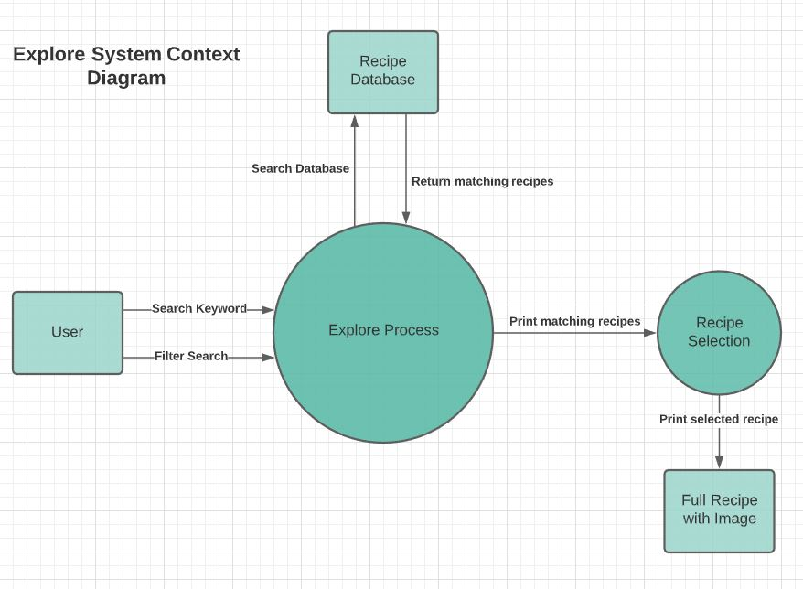
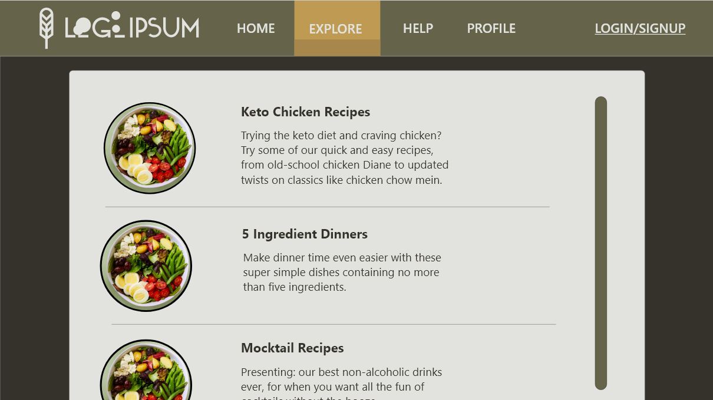

Testinmg this
Because I can
This is the Search Function MVF
User stories
Design Diagrams
 Explanation
The search feature allows users to enter keywords in a search bar to filter the recipe database for meals that meet the characteristics they’re looking for. Keywords highlight specific features of the recipe. For example, the keyword “Chicken” would find recipes including chicken, while the keyword “Vegetarian” would find only vegetarian recipes.Once searched, a selection of filtered recipes relevant to the keyword will be presented. Each recipe in this list will be a thumbnail of the dish accompanied by key information, such as estimated preparation time, price of ingredients, and its community rating. If a user selects a recipe from this list, the user will be taken to the full recipe page.
Users can also filter their searches by time, price, and rating. More than just recipes, the search feature can also be used to find other resources, such as tutorials and images.